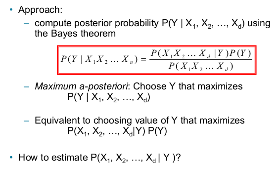
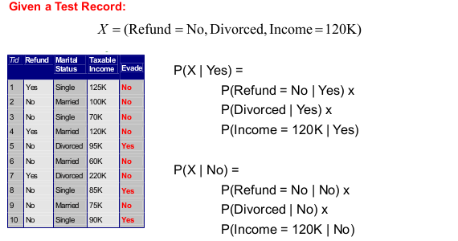
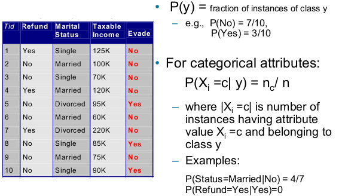
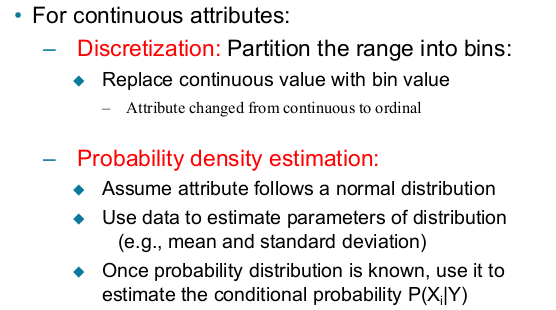
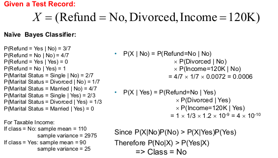
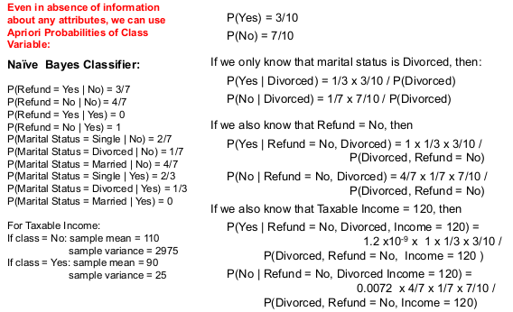
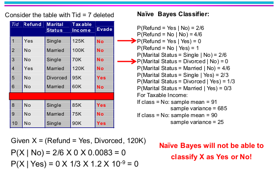
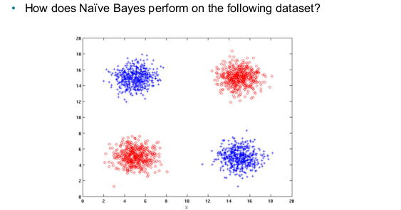

Data Mining: Bayesian Classifiers
Acknowledgement: This course (CSCI 5523) is being offered by Prof. Vipin Kumar at the University of Minnesota in Fall 2020.
Bayesian Classifiers
Let’s recall what bayes theorem is from Intro to Stat.
Using bayes theorem for classification

If each attribute is independent while being given a class attribute
, we can have:
For instance:

Estimate probabilities from data

While considering binary values are easy by counting, let’s look at what should we do with continues data.

Still the sample dataset above, let’s apply this naive bayer classifier.
- given a test data point
 - follow a decision tree

Issue with naive bayes classifier
- If the test data point has missing attribute, we might have the possibility to identify one class to be 0.
- If there is a missing data, we might not be able to classify as following:

Therefore, we want to use other estimates of conditional probabilities than simple fraction.
Original:
is the number of training instances belonging to class y
is the number of instances with
and
Laplace Estimate:is the total number of attribute values that
can take
m - estimate:is the initial estimate of
known apriori
is the hyper-parameter for our confidence in
Naive Bayes (Summary)
- Robust to isolated noise points
- Handle missing values by ignoring the instance during probability estimate calculations
- Robust to irrelevant attributes (because irrelevant attributes will have the similar weights to classified label e.g: 50%, 50%)
- Drawback: redundant and correlated attributes will violate class condition assumption
- Use other techniques such as Bayesian Belief Networks (BBN)
A intuitive bad example:

No, we cannot use naive bayes because conditional independence of attributes is violated. For instance, if , then
can be either red or blue.